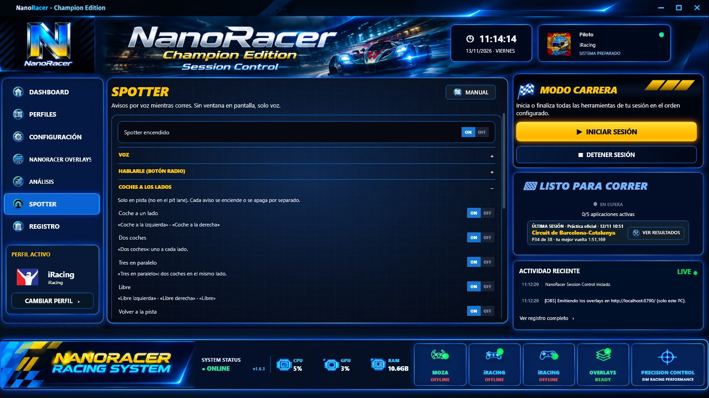

Spotter: avisos por voz
NanoRacer te dice en voz alta cuándo tienes un coche al lado, cuándo vuelves a estar libre y qué bandera sale.

Usa los datos en vivo de iRacing (coches a tu izquierda o derecha y banderas) y habla con la misma voz que Combustible → VOZ. No tiene ventana en pantalla: solo voz. Viene apagado de fábrica y solo habla con el perfil de iRacing activo; nunca en el garaje.
CÓMO SE ENCIENDE
- En el menú de la izquierda, entra en SPOTTER (encima de REGISTRO).
- Pon «Spotter encendido» en ON.
- Elige la voz y los avisos de cada bloque, y pulsa «PROBAR EL SPOTTER» para oírlos sin salir a pista.
HABLARLE (BOTÓN RADIO)
- En SPOTTER, abre «HABLARLE (BOTÓN RADIO)» y pon «Hablarle encendido» en ON. No hace falta tener el spotter encendido.
- El botón del volante viene en el 23 (RADIO). Para usar otro, pulsa CAMBIAR y después el botón del volante.
- En pista, pulsa el botón UNA vez (no hace falta mantenerlo), espera el pitido y di una orden. Si NanoRacer estaba hablando, se calla para escucharte.
- En «Prueba» sale la última frase que ha entendido. Funciona sin internet, con el reconocedor de voz en español de Windows y el micrófono predeterminado de Windows.
- Si el REGISTRO dice que Windows no tiene el reconocedor de voz en español: Configuración de Windows → Hora e idioma → Idioma y región → añade Español (España) → Opciones de idioma → instala «Reconocimiento de voz» y reinicia NanoRacer.
ÓRDENES DE VOZ (cada una se enciende o se apaga)
- «tiempo de vuelta»
- «Última vuelta, un minuto 32,4, más 3 décimas que tu mejor vuelta». También vale «última vuelta» o «tiempo».
- «delante» / «detrás»
- «El de delante está a 1,5 segundos». En carrera, el de tu clase; en práctica y clasificación, el coche más cercano en pista.
- «combustible»
- «Quedan unos 10 litros, da para 4 vueltas» (los cálculos del overlay de Combustible). También vale «gasolina».
- «objetivo»
- «Objetivo por vuelta, 3,07. La última, 3,21». Solo en sesiones con límite de vueltas.
- «parada»
- «Para dentro de 3 vueltas, echa unos 30 litros» o «No hace falta parar, llegas al final». Solo te lo dice: no cambia nada en boxes.
- «repite»
- Repite el último aviso.
- «calla» / «habla»
- «calla» deja de decir avisos hasta que digas «habla» (también vale «vuelve a hablar», «puedes hablar», «ya puedes hablar» o «avisos»). Las respuestas a lo que preguntas sí suenan.
- Si no te entiende
- En REGISTRO sale lo que ha oído y cuánto se fía («No entendido: ha oído «habla» (48 %)») o «No ha oído nada».
- Sin dato
- Si iRacing no da el dato (o aún no hay vueltas), contesta «No tengo ese dato».
PARADA POR VOZ (solo con el coche en pista)
- Cómo funciona
- Pulsa RADIO y di la orden. NanoRacer la repite y pregunta «¿Confirmo?»; tras el pitido di «confirma» (o «sí», «vale») o «cancela» (o «no»), sin volver a pulsar. Si no contestas en 5 s, no se manda nada. Luego comprueba lo que marca iRacing: «Hecho» o «iRacing no lo ha marcado».
- Combustible
- «echa veinte litros» (de 1 a 150) · «litros calculados» (los del overlay de Combustible) · «llena el depósito» · «sin gasolina». Con el autollenado de iRacing activo no pide litros.
- Ruedas
- «cuatro ruedas» · «delanteras» · «traseras» · «izquierdas» · «derechas» · «sin ruedas».
- Otros
- «reparación rápida» · «sin reparación» · «parabrisas» · «borra la parada» (quita todo lo marcado).
- Con PARADA AUTOMÁTICA
- Lo que dices por voz siempre manda: al entrar en el pit lane, PARADA AUTOMÁTICA solo pone lo que no hayas cambiado por voz y te dice lo que queda («Parada. Por voz: ruedas delanteras. Automático: 31 litros»). Al salir del pit lane se empieza de cero.
- Sin confirmar
- En SPOTTER → HABLARLE se puede apagar «Pedir confirmación antes de mandarlo»: entonces se manda en cuanto lo dices.
COCHES A LOS LADOS (solo en pista, no en el pit lane)
- Coche a un lado
- «Coche a la izquierda» o «Coche a la derecha», en cuanto un coche se pone a tu lado.
- Dos coches
- «Dos coches»: tienes uno a cada lado.
- Tres en paralelo
- «Tres en paralelo»: hay dos coches en el mismo lado.
- Libre
- «Libre izquierda», «Libre derecha» o «Libre» cuando ya no hay nadie.
- Volver a la pista
- Al salirte e ir despacio (p. ej. tras un trompo): «Espera, viene un coche» si llega uno por detrás a menos de 3 s, y «Libre, puedes volver» después de ese aviso, cuando llevan 2 s sin venir.
- Dirección contraria
- «¡Vas en dirección contraria!» si avanzas hacia atrás en la vuelta 1,5 s seguidos. Se repite cada 10 s si sigue.
BANDERAS (en pista y en el pit lane)
- Amarilla y safety car
- «Amarilla», «Amarilla, restos en pista», «Safety car», «Una vuelta para la verde».
- Verde
- «Bandera verde» al empezar y al relanzar.
- Azul
- «Bandera azul, deja pasar». Una vez al aparecer, no se repite.
- Última vuelta y cuadros
- «Última vuelta» (bandera blanca) y «Bandera a cuadros». Al pasar por meta con los cuadros dice tu tiempo y el resultado; después solo siguen las banderas, los lados, volver a la pista y dirección contraria.
- Roja
- «Bandera roja, sesión parada».
- Negra y comisarios
- «Bandera negra: penalización, entra en boxes» (se repite cada 60 s mientras siga), «Penalización cumplida» al quitarse, «Aviso de los comisarios», «Bandera de reparación, entra a reparar» y «Descalificado» (aunque iRacing te saque de pista). iRacing manda igual el drive through y el stop and go, así que no se puede decir cuál es.
- Cuándo
- Cada bandera se dice una vez cuando aparece; las que ya había al encenderlo no se dicen. Si coincide con un coche al lado, va primero el coche.
- Boxes abiertos o cerrados
- «Boxes cerrados» o «Boxes abiertos» cuando cambia (p. ej. con amarilla en óvalos). Si iRacing no lo manda, no dice nada.
- Pace car
- Solo en carrera, detrás del pace car: «Vas el tercero en la fila» (en fila doble, «Fila 3»; tras la verde, en relanzadas), «Tienes la vuelta gratis», «Adelanta al pace car para recuperar la vuelta» y «Te mandan al final de la fila».
BOXES
- Al entrar: litros
- «Te recomiendo unos 30 litros, elegidos unos 30 litros»: los litros a añadir del overlay de Combustible y los que tienes marcados en iRacing. Si falta un dato, esa parte no se dice.
- Pon el limitador
- «¡Limitador!» si a 1 s de entrar en el pit lane no lo llevas puesto.
- Cuenta atrás hasta tu plaza
- «3, 2, 1». Es la misma de Combustible y usa CUENTA ATRÁS DEL PITBOX, que tiene que estar activada.
- Al salir: resumen
- «Has estado unos 40 segundos, y has echado unos 30 litros»: tiempo en el pit lane y gasolina de más al salir.
- Parada terminada
- «Parada terminada» cuando iRacing acaba de darte servicio.
- Reparaciones
- En el pit lane: «Reparación de unos 25 segundos, más unos 10 segundos opcionales», «Quedan 10 segundos de reparación» y «Reparación terminada».
- Neumáticos: compuesto y juegos
- Al salir: «Llevas blandos» (si iRacing da el nombre del compuesto) y «Te quedan 2 juegos de neumáticos» o, si la carrera los limita por eje o por lado, «Te quedan 2 juegos delante y un juego detrás». Los juegos, solo si la carrera los limita.
- Rival y líder entran en boxes
- «El de delante / el de detrás / el líder entra en boxes»: de tu clase y solo en carrera.
RIVALES
- Coche más rápido detrás
- «Viene un coche más rápido, a 2 segundos»: de una clase más rápida. El mismo coche, como mucho cada 60 s; entre coches distintos, cada 30 s.
- Coche acercándose por detrás
- «Coche detrás, a un segundo» o «Coche detrás, muy cerca» cuando cualquier coche te alcanza (1 s de fábrica). Al mismo coche no se le repite hasta que se aleje y pasen 30 s; entre coches distintos, una vez cada 30 s. En carrera, nada de esto antes de la verde ni después de pasar por meta con la bandera a cuadros.
- También en práctica y clasificación
- Encendido de fábrica: esos dos avisos suenan también fuera de carrera. Todo lo demás de RIVALES es solo en carrera y con coches de tu clase.
- Al de delante / al de detrás
- En cualquier punto de la vuelta, con coches de tu misma vuelta. Mide el hueco cada 2 s y, tras un minuto, habla si está entre 1 s y el máximo que elijas (10 s de fábrica), lleva una tendencia clara y ha cambiado 2 décimas o más: «Le recortas 3 décimas al de delante, a 1,5 segundos», «El de delante se escapa», «El de detrás se acerca», «Te escapas del de detrás». Después vuelve a medir: como mucho, un aviso por coche cada minuto.
- De dónde salen los huecos
- Del Relative: el hueco en pista que calcula NanoRacer, no el de la clasificación de iRacing (que a veces da saltos). Si cambia el coche, alguno entra en boxes o el hueco salta más de 3 s entre dos medidas, la medida empieza otra vez.
- Tu posición y nuevo líder
- «Vas tercero», «Vuelves a ser tercero» (si recuperas un puesto), «Estás en el top 10» o «top 20» al subir, «Cambio de líder, el 23» o «Eres el líder», en tu clase, cuando el cambio dura 3 s. Al pasar por meta con los cuadros: «Has ganado», «Podio, acabas segundo», «Buena posición, acabas sexto» o «Acabas en la posición 14».
- Vuelta rápida de la carrera
- «Nueva vuelta rápida de la carrera, el 23» (o «…, es tuya»), en tu clase, desde la 3.ª vuelta y como mucho una cada 15 s.
- Vuelta rápida en práctica y clasificación
- De tu clase: «Tienes la vuelta más rápida de la sesión» o «Vuelta rápida de la sesión, el 23».
- Tiempo de vuelta del líder
- Apagado de fábrica (habla en cada vuelta): «Tiempo del líder, un minuto 32,4».
- El líder se ha salido
- «El líder se ha salido»: el líder de tu clase lleva 2 s fuera de pista y está cerca (de 1 a 5 s delante o de 1 a 3 s detrás). Solo en carrera, como mucho cada 30 s.
- Accidente en pista
- Solo en carrera. «Accidente delante» o «Accidente detrás» si un coche cercano suma 2 puntos o más. «Accidente delante, a unos 15 segundos» o «Accidente en el sector 3» si hay dos coches o más juntos, fuera de pista o casi parados (aproximación propia).
- Daños
- A los 5 s del golpe: «Tienes daños, se pueden reparar en boxes» o «Tienes daños, hay que repararlos». Qué pieza es no se puede decir: iRacing no lo da a otras apps.
- Una vuelta para ganar
- Con la bandera blanca si vas primero de tu clase.
- Salida y relanzadas
- «Prepárate, vamos a verde», «Espera, todavía no hay bandera verde» y «Hay zona de salida, no aceleres hasta la verde».
- Fin de la práctica
- «Se acabó la práctica, vuelve a boxes» con la bandera a cuadros.
- Coches en parrilla
- «Quedan 5 coches por colocarse», «Quedan 2…», «Falta el último coche en parrilla», «Ya están todos en parrilla» y «Media parrilla colocada». Aproximado.
- Nivel de la carrera por iRating
- Con SoF real: «Vamos a luchar por el podio», «Hay nivel, cabeza y concentración» o «Hay muchos puntos en juego, busca un buen resultado». Al acabar, «Se puede hacer mejor» si quedas más de 2 puestos por detrás de lo que te toca.
- Ánimo
- Cada 5 vueltas, si has ganado 5 puestos o más: «Sigue apretando»; la primera vez con 10 o más: «Muy bien, no aflojes».
- Coche por posición
- Con varias clases: «El de delante es por posición».
- Vuelta cronometrada
- En clasificación de 1 o 2 vueltas, a 3 s de la meta: «Viene tu vuelta cronometrada», «Viene tu primera vuelta cronometrada» y «Una vuelta más».
- Carrera alargada
- «Han alargado la carrera» si suben las vueltas totales en plena carrera.
- Pace car en relanzadas
- «Sale el pace car, fila india» o «…fila doble», «El pace car entra esta vuelta» y, si otro coche recibe la vuelta gratis, «Vuelta gratis, el 23. Déjale pasar por fuera». También las órdenes: «Colócate en tu sitio y mantén la velocidad» y «Mantén la velocidad, no aceleres hasta la verde».
- DRS
- «DRS disponible» la primera vez que se puede usar y «DRS desactivado» si sale una amarilla.
- Joker
- Solo en carreras con joker: antes de la salida, cuántas vueltas tienes que hacer y que no vale antes de pasar por meta; después, cuántas te quedan, «Joker completado» y «Acuérdate del joker» con la bandera blanca.
- Mala conexión
- «Mala conexión» si la calidad de iRacing baja de 0,8 durante 3 s (como mucho 2 veces, separadas 10 min) y «Conexión recuperada» al volver.
- Atajos de teclado
- En SPOTTER → ATAJOS DE TECLADO, sin asignar de fábrica: callar 30 s, subir y bajar el volumen, repetir el último aviso y activar o quitar los tiempos de vuelta.
- Coche doblado delante
- «Ese coche va doblado»: el que tienes justo delante en pista, a menos de 2 s, va media vuelta o más por detrás de ti. El mismo, como mucho cada 60 s.
- Avisos del líder
- Solo en carrera, el líder de tu clase: «El líder te va a doblar» (a menos de 2 s detrás y una vuelta por delante) o «El líder va justo delante» (a menos de 2 s delante y una vuelta por delante: puedes recuperarla).
- Coche parado o lento delante
- En cualquier sesión: «Coche parado delante» o «Coche lento delante» si está en pista a menos de 300 m delante y casi no avanza (el mismo aviso ⚠ del Relative). Una vez por coche cada 15 s.
VUELTAS Y FINAL
- Diferencia con tu mejor vuelta
- Al acabar cada vuelta cronometrada: «Más 3 décimas que tu mejor vuelta», «Menos 1,5 segundos que tu mejor vuelta» o «Igual que tu mejor vuelta». El tiempo exacto se ve en pantalla.
- Tiempo de vuelta
- Al acabar cada vuelta cronometrada: «Un minuto 32,4» (de 0:30 a 2:59,9).
- Tu mejor vuelta
- «Mejor vuelta, un minuto 32,1» cuando mejoras tu mejor de la sesión.
- Vueltas para el final
- «Quedan 10 vueltas», 5 y 2, en carrera. En carreras por tiempo es una estimación (la misma del overlay de Combustible): «Quedan 5 vueltas, más o menos».
- Minutos para el final
- «Quedan 20 minutos», 10 y 5, solo en sesiones con tiempo límite.
- Mitad de carrera
- «Mitad de carrera», solo en carrera. La última vuelta la dice BANDERAS (bandera blanca).
- Vuelta de entrada a boxes
- El tiempo de la vuelta en la que entras al pit lane no se dice (no sirve y cortaba la cuenta atrás).
En las carreras fixed (setup fijo) iRacing no deja tocar el setup y no se carga combustible: solo se entra a boxes para reparar averías. Por eso, en esas carreras el spotter no habla de gasolina. NanoRacer lo sabe solo, porque iRacing marca en los datos de la sesión qué carreras son fixed. En una carrera fixed calla: todo el bloque COMBUSTIBLE, la «Gasolina en parrilla», el «Te recomiendo X litros» al entrar en boxes y la parte «y has echado X litros» al salir. Todo lo demás (coches a los lados, banderas, limitador, cuenta atrás, rivales, vueltas, incidentes, motor, clima…) funciona igual. En las carreras que no son fixed, los avisos de gasolina funcionan con normalidad.
COMBUSTIBLE
- De dónde sale
- De los mismos cálculos que el overlay de Combustible (consumo medio, márgenes, vueltas que faltan). Funciona aunque el overlay esté cerrado.
- Gasolina que te queda
- «Te queda gasolina para 5 vueltas», luego 2 y 1, al pasar por meta. En carrera no lo dice si llegas al final sin parar.
- ¿Llegas al final?
- «Llegas al final», «Vas muy justo, ahorra» (falta menos de una vuelta) o «Tienes que parar a repostar». En carrera, cuando cambia o en cada vuelta (tú eliges).
- Vuelta de la parada
- «Parada en 2 vueltas» y «Entra a boxes esta vuelta» en carrera. «¡No llegas al final de la vuelta!» siempre, una vez por tanda. Al pasar por meta con la bandera a cuadros deja de hablar de gasolina.
- Datos de consumo
- «Aún no hay datos de consumo» al empezar y «Ya hay datos de consumo» cuando el cálculo ya sirve.
INCIDENTES Y MOTOR
- Tus incidentes
- «Más 1, fuera de pista. Llevas 3», «Más 2, contacto con el muro» o «Más 4, contacto con otro coche. Llevas 9». El tipo lo da iRacing; si no llega, se deduce de los puntos (1x, 2x, 4x). En carreras por equipos, el aviso de descalificación cuenta los puntos del equipo.
- Cerca del límite
- «Ojo, te quedan 4 puntos para la descalificación», solo si la sesión tiene límite.
- Coche fuera de pista cerca
- «Coche fuera de pista delante» o «…detrás», a menos de 3 s en pista. Una vez por coche cada 10 s.
- Avisos del motor
- «Temperatura del agua alta», «Temperatura del aceite alta», «Presión de aceite baja», «Presión de gasolina baja», «Motor calado». Una vez cuando se enciende; otra solo si vuelve pasados 30 s.
- Daños
- No se pueden avisar: iRacing no da los daños del coche en vivo.
PARRILLA Y CLIMA
- Entra al coche
- «Entra al coche, la carrera va a empezar» si iRacing pide subir al coche y no estás dentro. Solo en carrera, una vez.
- Gasolina en parrilla
- «Ojo: llevas 12 litros y no llegas al final; el depósito no está lleno». Solo si no llegas y el depósito no está lleno.
- Nivel de la carrera
- «SoF de 2350, 22 pilotos» al estar en parrilla. Contra la IA, solo «40 pilotos».
- Tipo de salida
- «Salida lanzada» o «Salida parada» (lo manda iRacing en los datos de la sesión).
- Lluvia
- «Empieza a llover» o «Ha dejado de llover», cuando dura 1 minuto.
- Estado de la pista
- «Han declarado la pista mojada / seca» y «La pista se está mojando / secando» (cuando dura 30 s).
- Neumáticos para la pista
- «Ponte de lluvia» con la pista mojada y declarada mojada, o «Ponte de seco» con la pista seca, si tu coche tiene neumáticos de lluvia y dura 30 s.
- Pronóstico
- No se puede avisar: iRacing no da el pronóstico en vivo.
AJUSTES
- Cuánto habla
- Poco = solo el coche y «libre» al final. Normal = también «libre izquierda/derecha». Mucho = además recuerda cada 4 s que el coche sigue ahí.
- Esperar antes de decir «libre»
- Medio segundo de fábrica. Evita que diga «libre» y vuelva a avisar cuando un coche roza el límite. Si llega tarde, bájalo.
- Hablar en práctica / clasificación / carrera
- Para que solo hable en las sesiones que quieras.
Comprueba que la tarjeta pone ENCENDIDO y que «PROBAR EL SPOTTER» suena. Mira también que la sesión esté marcada en «Hablar en…». Si una parte de un aviso no está grabada todavía, esa parte no se dice (nunca con otra voz) y el REGISTRO dice cuál falta. Si sigue sin sonar, el motivo sale en el REGISTRO, en una línea que empieza por «[Voz]».